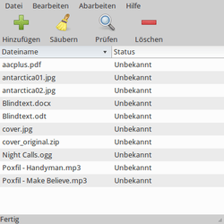
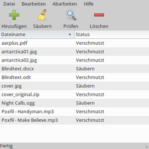
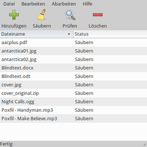

MAT
Dieser Artikel wurde für die folgenden Ubuntu-Versionen getestet:
Ubuntu 16.04 Xenial Xerus
Ubuntu 14.04 Trusty Tahr
Zum Verständnis dieses Artikels sind folgende Seiten hilfreich:
In Dateien eingebettete, für den menschlichen Betrachter unsichtbare Metadaten erleichtern den täglichen Umgang mit digitalen Medien. Durch die Einbettung lassen sich diese Daten bequem mit der Original-Datei weitergeben. Dennoch kann es aus Datenschutzgründen erforderlich sein, diese Metadaten vor einer Veröffentlichung (z.B. im Internet) wieder zu entfernen.
MAT  (Metadata Anonymisation Toolkit) bietet eine einfache grafische Lösung, die nicht auf einen bestimmten Dateityp beschränkt ist. Praktisch können also Metadaten aus Bildern, Audiodateien und Office-Dokumenten inklusive PDF-Dateien in einem Rutsch entfernt werden. Der Ursprung liegt in einem GSoC-Projekt aus dem Jahr 2011, das von den Tor-Entwicklern begleitet wurde. Erstellt ist es mit Python 2.
(Metadata Anonymisation Toolkit) bietet eine einfache grafische Lösung, die nicht auf einen bestimmten Dateityp beschränkt ist. Praktisch können also Metadaten aus Bildern, Audiodateien und Office-Dokumenten inklusive PDF-Dateien in einem Rutsch entfernt werden. Der Ursprung liegt in einem GSoC-Projekt aus dem Jahr 2011, das von den Tor-Entwicklern begleitet wurde. Erstellt ist es mit Python 2.
Hinweis:
Bei Verwendung der grafischen Oberfläche werden keine Sicherungskopien angelegt! Möchte man Metadaten erhalten, sollte man nur Kopien der Originaldateien säubern (oder die Kommandozeilenversion nutzen).
Unterstützte Dateiformate¶
Achtung!
MAT entfernt zwar die Metadaten, anonymisiert aber keine Inhalte. Des Weiteren werden spezielle Wasserzeichen, mittels Steganographie verborgene oder mit anderen Techniken eingebettete Informationen nicht entfernt.
| Unterstützte Dateiformate | |||
| Format | Dateityp | Unterstützt | Anmerkung |
| Portable Network Graphics | .png | Ja | Textmetadaten und Datum |
| JPEG | .jpg | (Ja) | Kommentare und Exif-/IPTC-/XMP-Tags werden gelöscht. Herstellerspezifische Tags aus nach JPEG umgewandelten RAW-Bildern werden u.U. nicht entfernt (siehe auch Kontrolle). |
| OpenDocument | .odt .ods .odp etc. | Ja | LibreOffice/Apache OpenOffice |
| Office Open XML | .docx .xlsx .pptx etc. | Ja | Microsoft Office |
| Portable Document Format | Ja | ausgenommen sind DRM-geschützte PDF-Dateien | |
| Tape ARchive | .tar .tar.gz .tar.bz2 | Ja | |
| ZIP | .zip | (Ja) | Metadaten, die vom Packprogramm selbst in internen Dateien gespeichert wurden, können nicht entfernt werden |
| MPEG-1 Audio Layer 1/2/3 | .mp3 .mp2 .mp1 .mpa | Ja | Entfernen der ID3-Tags bei MP3 |
| Ogg Vorbis | .ogg | Ja | |
| FLAC | .flac | Ja | |
| Bittorrent | .torrent | Ja | |
Installation¶
 MAT ist ab Ubuntu 12.10 in den offiziellen Paketquellen enthalten und kann über folgendes Paket installiert [1] werden:
MAT ist ab Ubuntu 12.10 in den offiziellen Paketquellen enthalten und kann über folgendes Paket installiert [1] werden:
mat (universe)
 mit apturl
mit apturl
Paketliste zum Kopieren:
sudo apt-get install mat
sudo aptitude install mat
Verwendung¶
Bei Ubuntu-Varianten mit einem Anwendungsmenü erfolgt der Programmstart [3] über den Menüeintrag "System -> MAT". Ansonsten verwendet man den Befehl mat-gui.
Die Bedienung ist auf das Wesentliche reduziert: nach Auswahl einer oder mehrerer Dateien/Ordner (Ordern werden rekursiv eingelesen) mit der Schaltfläche  prüft man zuerst den Status . Der Zustand ist entweder:
prüft man zuerst den Status . Der Zustand ist entweder:
"Verschmutzt" - Metadaten enthalten oder
"Säubern" - unglückliche Übersetzung von "Sauber", keine Metadaten enthalten
Nun kann man die Metadaten aus allen verschmutzten oder nur den markierten Dateien über die Schaltfläche am oberen Fensterrand entfernen. Welche Einschränkungen bei manchen Dateiformaten bestehen, kann neben der obigen Tabelle über den Menüpunkt "Hilfe -> Supported Formats" nachgeschlagen werden.
|  |
| 1. hinzugefügte Dateien |
|  |
| 2. nach Prüfung |
|  |
| 3. nach Bereinigung |
| Funktionen | |
| Symbol | Zweck |
 | Dateien/Ordner hinzufügen. Mehrfachauswahl mit
⇧ +  oder
Strg + möglich. oder
Strg + möglich. |
 | Dateien säubern |
| Dateien prüfen | |
 | Dateien aus Liste entfernen |
MAT kann auch Dokumente innerhalb von Archivdateien bereinigen und wieder zurückschreiben (die eingangs erwähnten Office-Dokumentformate sind nichts anderes).
Eine Erweiterung für den Dateimanager Nautilus (erfordert das Paket python-nautilus), mit der die Funktionalität vom MAT über das Kontextmenü  zur Verfügung steht, wurde im Rahmen des Artikels nicht getestet.
zur Verfügung steht, wurde im Rahmen des Artikels nicht getestet.
Kontrolle¶
Zur Kontrolle der Arbeitsweise von MAT dienen verschiedene Kommandozeilenwerkzeuge wie z.B. ExifTool, das nicht nur Bilddateien prüfen kann, während Exiv2 und JHead auf diese beschränkt sind.

Kommandozeilenversion¶
Wer möchte, kann MAT auch auf der Kommandozeile bzw. in einem Terminalfenster [4] nutzen. Die generelle Syntax lautet:
mat [OPTIONEN] DATEI(EN)
Das Programm kennt u.a. die folgenden Optionen:
| Optionen von mat | |
| Option | Beschreibung |
-h, --help | Kurzübersicht der Optionen |
-b, --backup | Sicherungskopie der Dateien erstellen |
-c, --check | Status überprüfen |
-d, --display | Anzeige der Metadaten (ohne Bereinigung) |
-f, --force | Metadaten ohne Statusprüfung entfernen |
-l, --list | Auflisten aller unterstützten Dateiformate |
Ein komplette Übersicht ist der Manpage zu mat zu entnehmen.
Problembehebung¶
Deutsche Programmoberfläche¶
Obwohl für MAT eine deutsche Übersetzung vorliegt, erscheinen dennoch englische Texte und Beschriftungen. Bis einschließlich der Version 0.5.2 verhindert ein Fehler die korrekte Lokalisierung. Um diesen zu beheben, bearbeitet man die Datei /usr/share/mat-gui mit einem Editor [5] und Root-Rechten [6] und fügt eine Zeile ein (hier gelb markiert):
class GUI(object):
'''
Main GUI class
'''
def __init__(self):
# Preferences
self.add2archive = True
self.pdf_quality = False
# Main window
self.builder = Gtk.Builder()
self.builder.set_translation_domain('MAT')
self.builder.add_from_file(os.path.join(mat.get_datadir(), 'mat.ui'))
self.builder.connect_signals(self)Links¶
mat - Manpage
GIT-Repo
- QuellcodeThe Metadata Anonymization Toolkit
 - lesenswerter Artikel des Programmautors Julien Voisin et al. (Quelle: Cornell University Library )
- lesenswerter Artikel des Programmautors Julien Voisin et al. (Quelle: Cornell University Library )
Fotos, PDF und Office Dokumente anonymisieren
 - Privacy-Handbuch
- Privacy-Handbuchcreepy - Benutzerprofile anhand von Geodaten erstellen
Metadaten
 Übersichtsseite
Übersichtsseite
- Erstellt mit Inyoka
-
 2004 – 2017 ubuntuusers.de • Einige Rechte vorbehalten
2004 – 2017 ubuntuusers.de • Einige Rechte vorbehalten
Lizenz • Kontakt • Datenschutz • Impressum • Serverstatus -
Serverhousing gespendet von